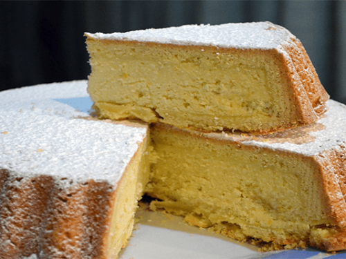

Receta de la torta de ricota

Descripción:
Típico postre de la mesa de los argentinos, esta receta muy sencilla de elaborar es una torta que cuenta con un relleno
de ricota dulce.
Ingredientes:
Para la masa:
- 250grs manteca pomada
- 150grs azúcar
- 2 huevos
- Escencia de vainilla
- Ralladura de limón
- 400grs harina 0000
- 1 cucharadita de té de polvo para hornear
- Sal (1 pizca)
Para el relleno:
- 600grs ricota
- 150grs azúcar
- 2 huevos
- Esencia de vainilla
- Ralladura de limón
Preparación:
Para la masa:
- Batir la manteca con el azúcar hasta obtener una crema suave.
- Añadir de a uno los huevos e integrarlos perfectamente a la mezcla.
- Perfumar con la esencia y la ralladura.
- Incorporar la harina cernida con el polvo para hornear y la sal.
- Envolver la masa en film transparente y llevar al frío durante 1 hora como mínimo.
Para el relleno:
- Eliminar el suero de la ricota con un tamiz y verter la ricota en un bol.
- Añadir los huevos, el azúcar , perfumar con la ralladura de limón y la esencia.
- Mezclar bien hasta obtener una crema homogénea.
Armado:
- Enmantecar y enharinar una tartera de 24 cm de diámetro.
- Dividir la masa en dos partes y estirar una de ellas sobre la mesa apenas enharinada.
- Forrar el molde y rellenar con la crema de ricota.
- Estirar la otra porción de masa y cubrir el relleno.
- Pintar con huevo batido, pinchar la superficie y hornear a 160º C durante 40 minutos.
Inicio